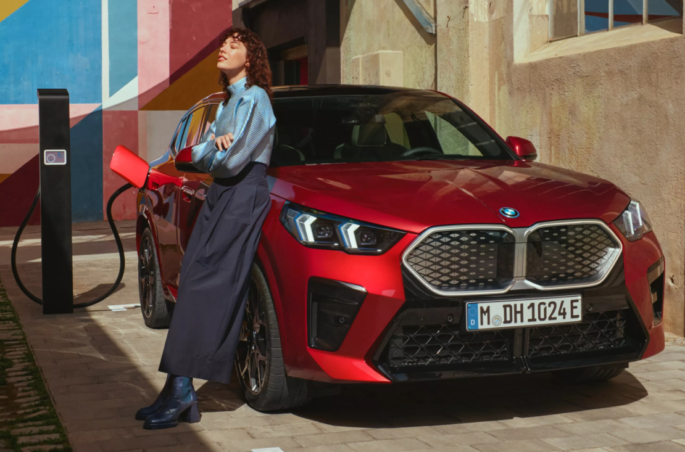
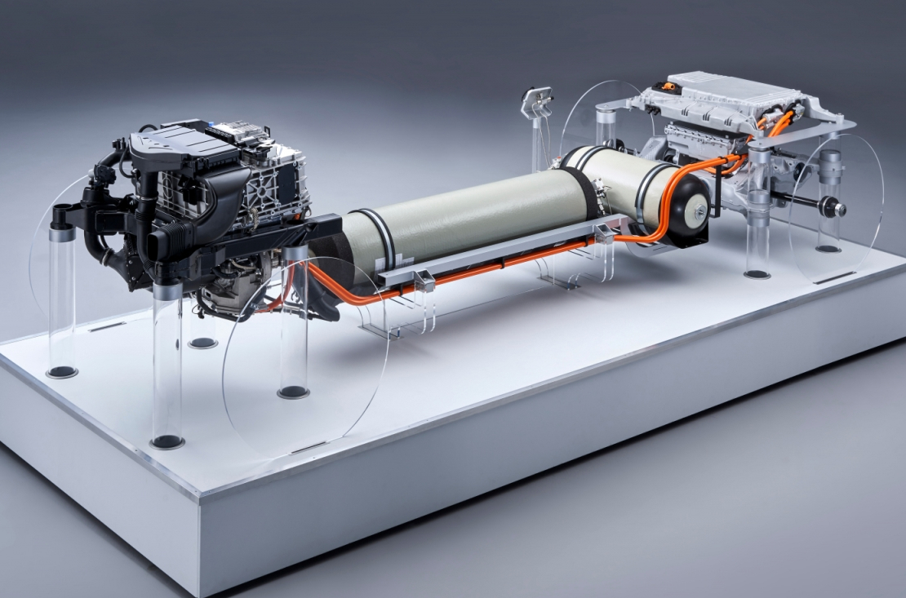
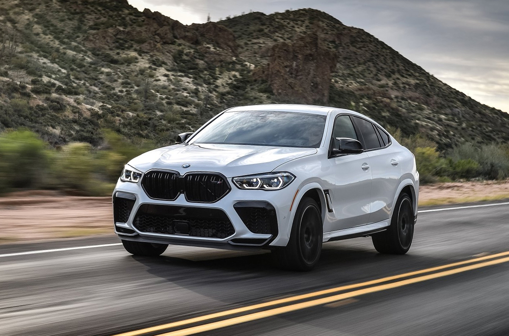
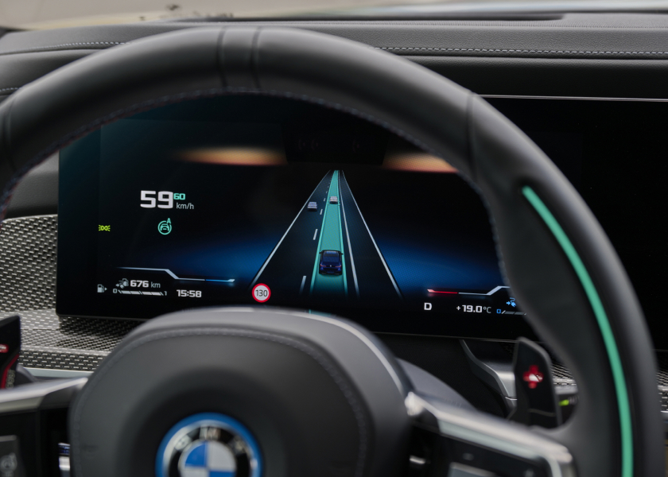
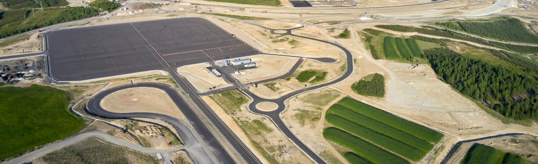

Innovation
Innovations
by the BMW Group.
As it advances future mobility, the BMW Group is establishing and developing new drive technologies.
So, as well as enhancing its existing solutions, it is also researching new ones.
Given our focus on sustainability, the spotlight is very much on electric drives,
and with the launch of the Neue Klasse in 2025, we will be gearing up for a fully electric portfolio.
While electromobility using battery electric vehicles is already established as standard,
hydrogen technology has the potential to play an important role on the road to decarbonization.
DRIVE TECHNOLOGIES.
-

ELECTRIC DRIVES.
At the BMW Group, the future of mobility is electric. BMW eDrive technologies and Efficient Dynamics are at the very heart of our premium vehicles, because when it comes to dynamic driving, more powerful electric motors and increased-capacity energy storage are fundamental, while maximum torque ensures fast acceleration right from the get-go.
-

HYDROGEN DRIVES.
Electric mobility is already widely available across the BMW Group's product range, but there's another technology that's seen as a potential key to future mobility too: hydrogen technology. The pilot fleet - with the BMW iX5 Hydrogen - was just the beginning of the development of hydrogen-powered, locally emission-free mobility at the BMW Group. With the series offering, the BMW product portfolio is being expanded to include an FCEV series production vehicle as a complement to the drivetrain technologies of battery electric vehicles, plug-in hybrid electric vehicles, and internal combustion engines.
-

COMBUSTION ENGINES.
Combustion engines by the BMW Group are made for maximum efficiency and performance and minimum fuel consumption and pollutants. Our three-, four- and six-cylinder petrol and diesel engines with BMW TwinPower Turbo Technology set new standards.
The latest-generation BMW EfficientDynamics engine family delivers superior performance and environmental credentials, thanks to state-of-the-art injection technologies, innovative transmissions and BMW BluePerformance for lower nitrogen emissions.
THE ROAD TO
AUTONOMOUS DRIVING.
-

DRIVING EXPERIENCE AT THE BMW GROUP.
The last few decades have seen a quantum leap in terms of development - not only in cars but in driving too. And it's not just in terms of technology: our understanding of modern-day mobility has changed as well. Driving is about so much more than just steering, accelerating and braking. Far more, it's connected, designed for dynamics and comfort and therefore increasingly automated. Cars now have intelligent systems that allow them to adapt to the driver and their needs while also improving safety.
Since the 1990s the BMW Group has been investing in modern mobility and creating increasingly automated systems to help driver and vehicle become independent of each other. The road to autonomous driving is categorised into five levels and is being realised in several stages. With its current focus on Levels 3 and 4 - on the development of fully automated driving, in other words - the BMW Group is committed to advances in every area, contributing to the perfect driving experience every driver desires. -
SAFELY TO THE DRIVING EXPERIENCE
OF THE FUTURE.When it comes to autonomous driving, safety is our top priority. This means the focus is not just on developing safety-critical systems but also on monitoring and testing the relevant technologies. For customers to place their trust in our automated driving systems, safety is essential. And that's why every detail of every innovation is tested and tested again. Because we want drivers to have complete confidence in their cars.
